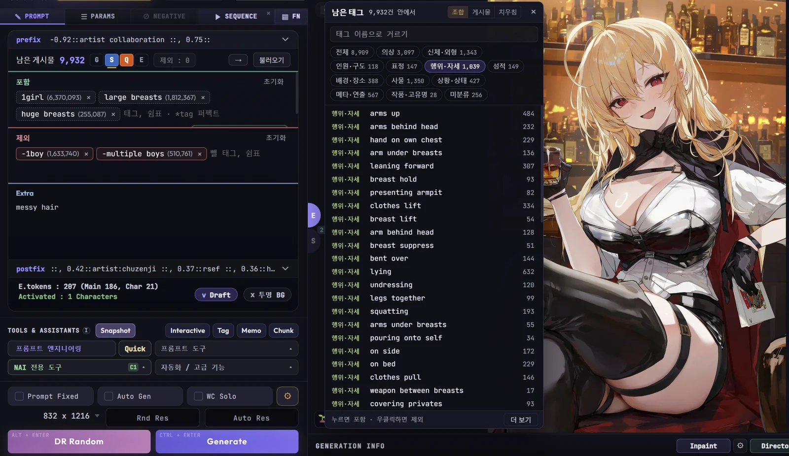
- 드래프트 모드는 조금 더 빠르게 랜덤 프롬프트 풀을 정제하여 랜덤 프롬프트를 생성할 수 있게 하고, 남아있는 태그들을 쉽게 볼 수 있게 해주는 NAIA 내 랜덤 프롬프트 기능의 변형 버전입니다.
- NAIA에 익숙하지 않은 초보 사용자들에게 적합합니다.
드래프트 모드의 진입
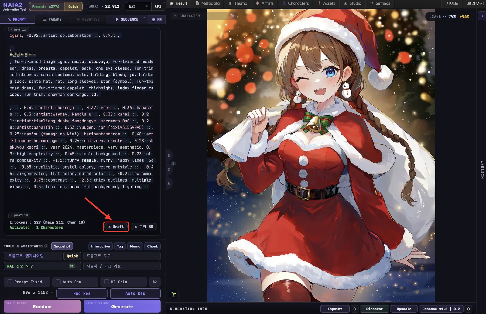
- 메인 프롬프트 하단 영역에 Draft 버튼이 추가됩니다.
- 이 버튼을 누르면 Random / Generate 버튼의 메인 랜덤 프롬프트 연동이 해제되고 , Draft 전용 화면으로 이동 합니다.
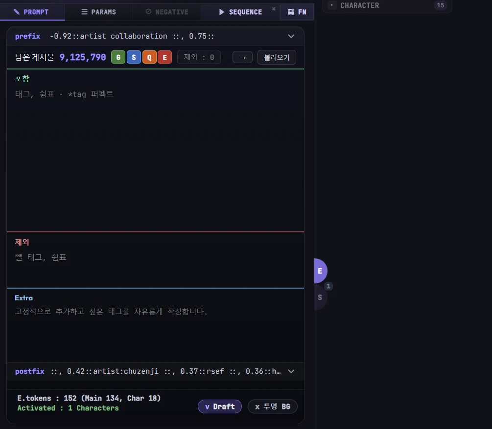
- 기능 진입 후 메인 프롬프트 영역이 그림처럼 변합니다.
프롬프트 입력
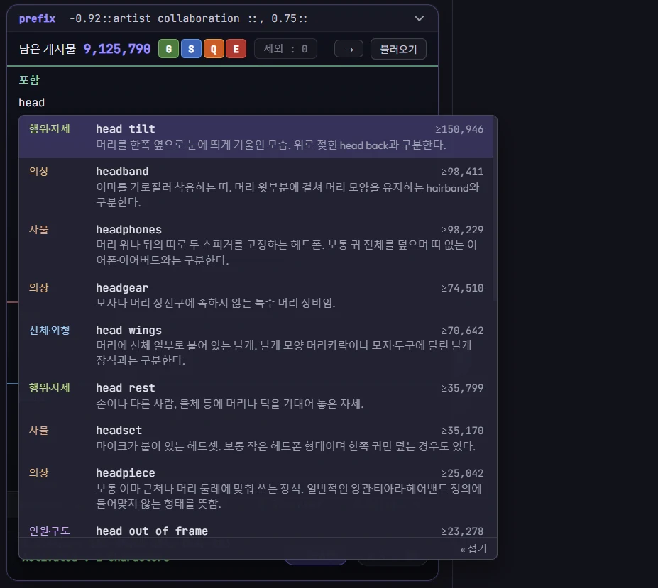
- 드래프트 모드에서는 [포함] 또는 [제외] 영역에 프롬프트를 입력할 때 실제 존재하는 프롬프트와 그 설명을 나열합니다. 성능 이슈가 있어 모든 프롬프트를 보여주지는 않습니다.
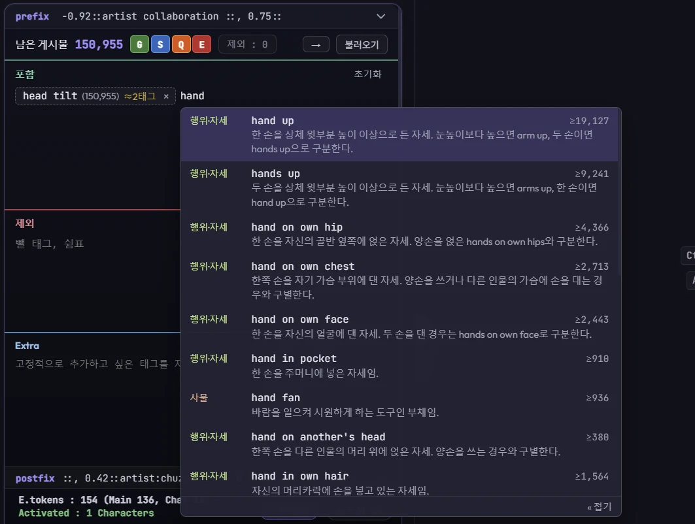
이미지의 수위 조절
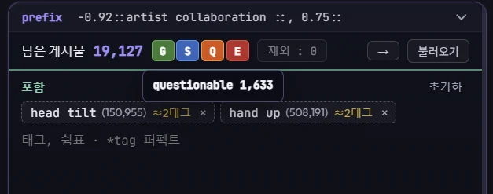
- 드래프트 모드에서는 General, Sensitive, Questionable, Explicit에 해당하는 잔여 프롬프트가 얼마나 남아있는지 [남은 게시물] 옆 버튼들에 마우스를 올려 확인할 수 있습니다.
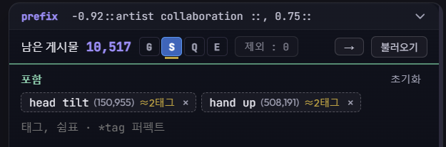
- 그림과 같이 특정 등급만 남기면, 앞으로 출력되는 이미지는 해당 등급으로 고정됩니다.
랜덤 프롬프트 생성
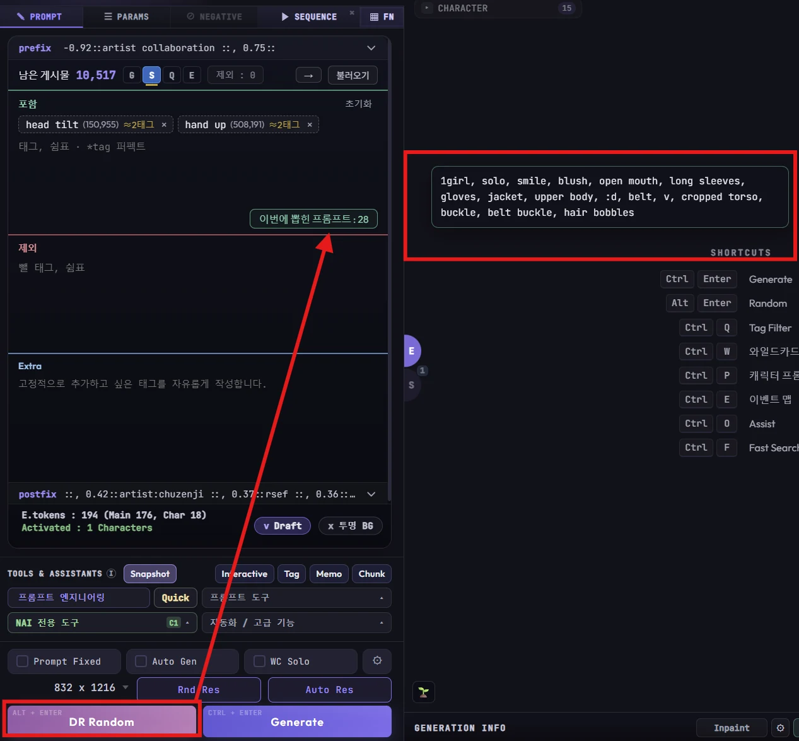
- 하단 DR Random 버튼을 누르게 되면 "이번에 뽑힌 프롬프트" 상자가 나타나고, 오른쪽에 1초 동안 어떤 프롬프트가 포함되었는지 보여주는 박스가 나타납니다.
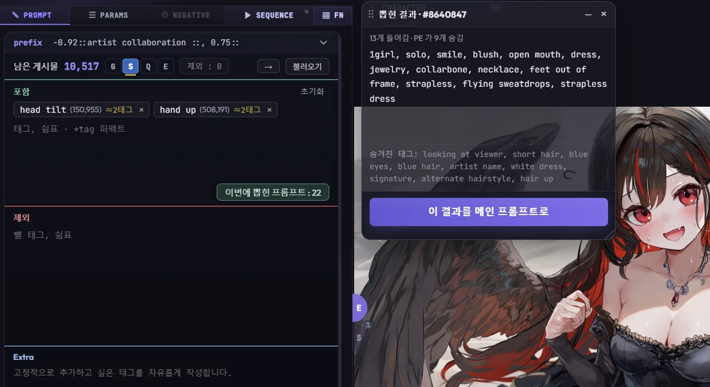
- [이번에 뽑힌 프롬프트] 버튼을 누르면 현재 드래프트 윈도우에서 잡고 있는 프롬프트 정보를 확인할 수 있습니다.
[ 이 결과를 메인 프롬프트로 ]
버튼을 누르게 되면 드래프트 모드가 종료되고, 현재 들고 있던 랜덤 프롬프트를 메인 프롬프트로 보냅니다.
엑스트라 태그 (추가 프롬프트)
- 엑스트라 태그는 드래프트 모드에서 추가적으로 제공되는 고정 프롬프트 영역입니다.
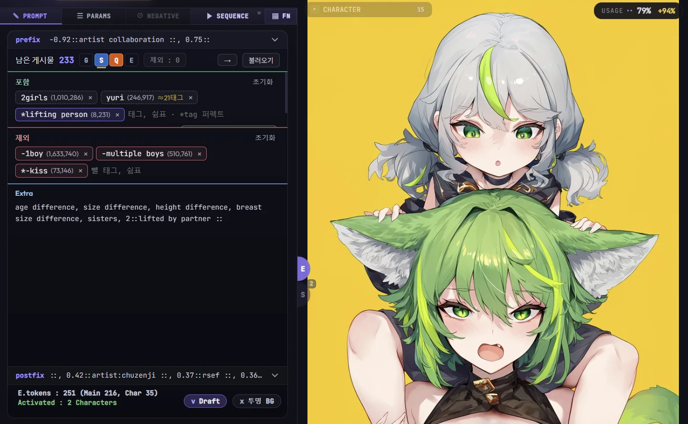
드래프트 모드에서의 이벤트 맵 호출
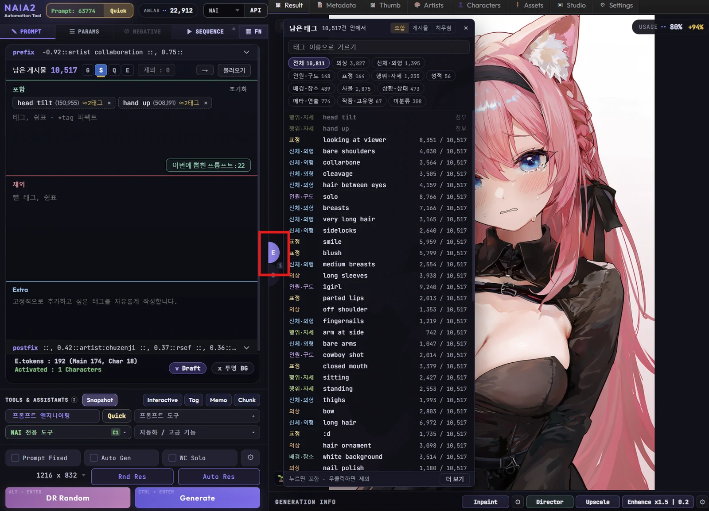
- 드래프트 모드에서 이벤트 맵 (Ctrl + E) 을 호출하는 경우, 드래프트 모드 전용 이벤트 맵이 나타납니다.
- 이 이벤트 맵에는 앞으로 나올 수 있는 태그들의 목록이 나열됩니다.
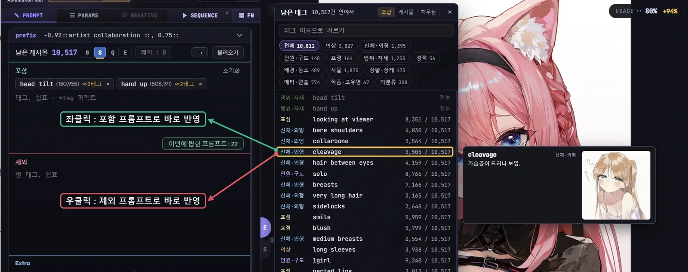
- 좌클릭 시 [포함] 태그로 들어가고, 우클릭 시 [제외] 태그로 들어갑니다.
- 여기서 [제외] 라 함은 해당 태그를 포함하지 않는 이벤트만 랜덤 프롬프트 풀에 삽입되는 것을 의미하지, 이 구도의 이미지가 출현하지 않는 것을 보장하지는 않습니다.
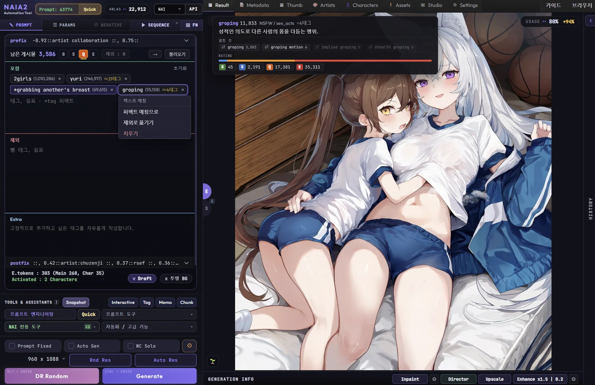
- 프롬프트 칩을 누르게 되면 제외로 옮기거나, 퍼펙트 매칭 처리할 수 있는 기능이 제공됩니다.
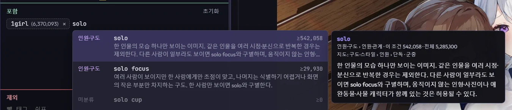
- 퍼펙트 매칭은 "solo" 태그 처럼, 이 태그에 의해 여러가지 태그 조합이 함께 랜덤 풀에 담기는 것을 방지합니다.
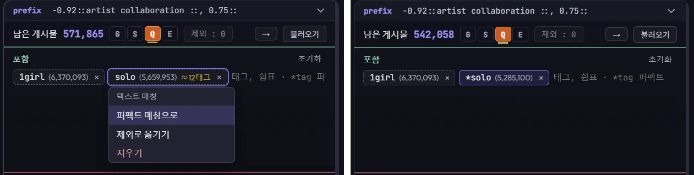
- solo 태그는 명확하게 1명의 캐릭터가 이미지 안에 존재하는 상황을 보장합니다. ( *solo )
- 그러나 퍼펙트 매칭 처리가 안되어 solo focus 같은 태그가 혼입되는 경우 2명 이상의 캐릭터가 화면에 나타날 수 있습니다.
드래프트를 보관하기
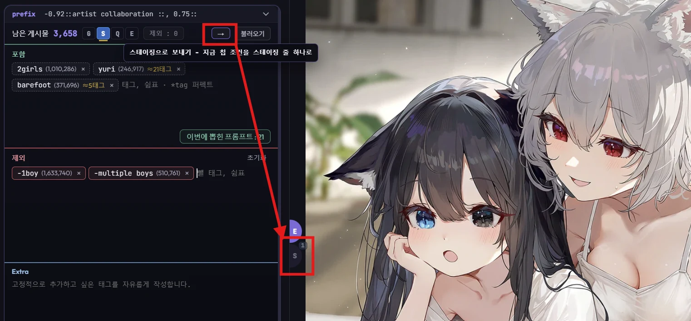
- 상단의 → 버튼을 누르면 현재 검색 결과를 스테이징으로 보낼 수 있습니다.
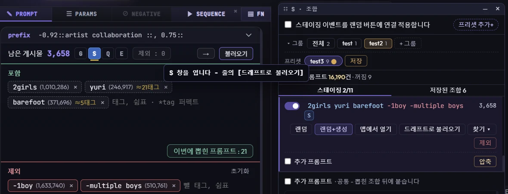
- 스테이징된 컨텐츠는 나중에 다시 [드래프트로 불러오기] 버튼을 눌러 복원하거나, 혹은 스테이징 메뉴 상단의 [스테이징 이벤트를 랜덤 버튼에 연결 적용합니다] 버튼을 눌러 여러개의 랜덤 프롬프트 풀을 합칠 수 있습니다.
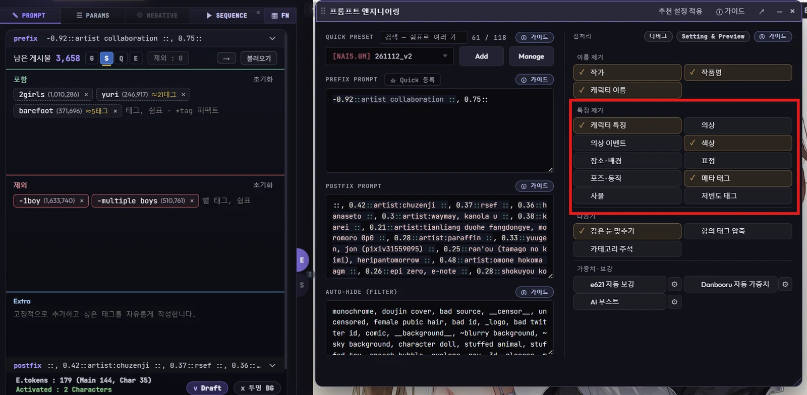
- 드래프트의 랜덤 프롬프트 또한 [프롬프트 엔지니어링]의 특징 제거 옵션을 받으므로, 자세한 내용은 기초 가이드 혹은 프롬프트 엔지니어링 가이드를 확인합니다.